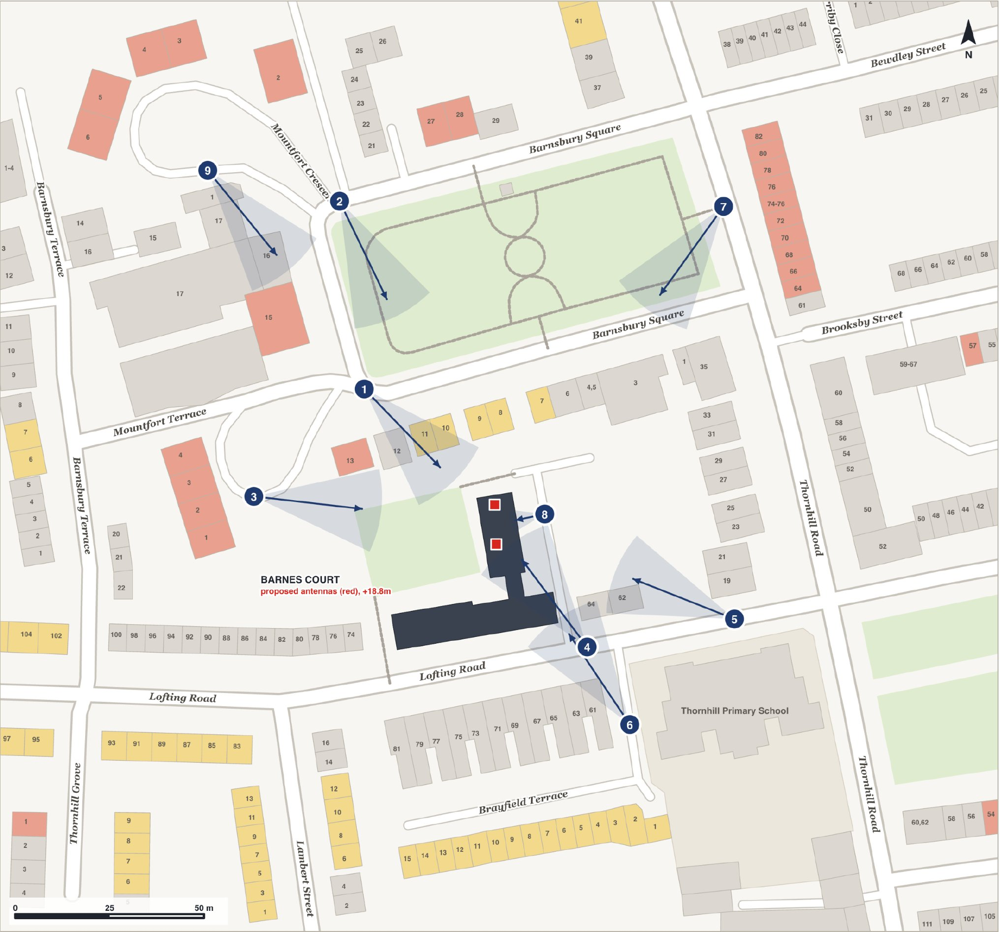

A phone mast on the Barnsbury skyline?
Telent, working for EE and Three, wants to put a large mobile phone base station on the roof of Barnes Court, Lofting Road: directly above people's bedrooms, in the heart of the Barnsbury Conservation Area.

Telent, working for EE and Three, wants to put a large mobile phone base station on the roof of Barnes Court, Lofting Road: directly above people's bedrooms, in the heart of the Barnsbury Conservation Area.
Everything we've found so far, with where it comes from.
Steel frames and antennas 4.3m above the roof, in view across the conservation area.
From the operators' own drawings (dated 4 September 2026):
The roof is at 14.5m. The antenna tops would reach 18.8m, 4.3m above it. Using Environment Agency height data (surveyed 2018–20), that is about 4–5m above every roofline within roughly 250m. Two houses on Barnsbury Square have since added a storey, which narrows the gap on that side.
Barnes Court is in the Barnsbury Conservation Area, about 300m inside its boundary. The houses directly behind the equipment, 7–11 Barnsbury Square, are locally listed. West Lodge (Grade II listed) is 41m away. 1–4 Mountfort Terrace, Mountford House and 27–28 Barnsbury Square, all Grade II, are within about 100m. Around 60 listed buildings lie within 250m.
The operators' drawings show one view, from the east, comparing the block with a 9m house. None shows the view from Barnsbury Square.

A notice of a decision already made, with figures that don't add up.
"We currently have a radio base station located at 9-17 St Albans Place… which is being lost from the network."Letter to residents, 27 October. Repeated by email, 13 November.
"The St Albans Place infrastructure… has since been decommissioned."Email from Telent, 24 November. No date given.
We've asked. These are still open.
Islington decides, twice. Here's how, and when you can have your say.
The fast route. Telent says the scheme is "permitted development". On that route the council can look only at siting and appearance, and has 56 days to decide. If it hasn't decided by then, the operator can go ahead.
Full planning permission. A full application, assessed in the round, with proper consultation and no automatic approval by deadline. This is what we are asking for.
Islington Council is the planning authority that decides the application. It is also the freeholder of Barnes Court, the landlord any operator must deal with for the roof. Our councillors and MP can press it on both.
Health. National planning rules treat compliance with international exposure guidelines as settling health questions, so health is very unlikely to be accepted as a reason to refuse. That's why objections should focus on appearance and heritage. It doesn't stop residents asking whether they'd want to sleep under it.
No application has been lodged yet. When one is, the council will notify neighbours and invite comments, and the window can be short. We'll post the reference and how to object on this page.
1. Tell Telent you object. Email planning@telent.com, quoting site ref 38887.
2. Tell the people who represent us.
Write in your own words: personal letters count for more than copies. Copy barnsburyskyline@gmail.com if you'd like updates.
Write to the people who represent us.
Use your own words. When the planning application is lodged, we'll post here how to object. Email barnsburyskyline@gmail.com to be told when.
| Date | What happened |
|---|---|
| 27 Oct | Letter to residents: 14 days to comment, no drawings. |
| 13 Nov | A resident objects and asks for the plans. Telent sends the drawings, calls the scheme "permitted development" and says this is "not a formal consultation process". |
| 13 Nov | The resident records in writing that 30 sites were considered and the decision already made. Not disputed. |
| 14–24 Nov | Asked three times when the old site stopped working. Telent confirms it "has since been decommissioned", with no date. |
| 27 Nov | No planning application lodged, as far as we know. |
More to follow, including the 27 October letter.
Residents of Barnes Court and neighbours in Barnsbury. We're not a company or a political group. Contact: barnsburyskyline@gmail.com